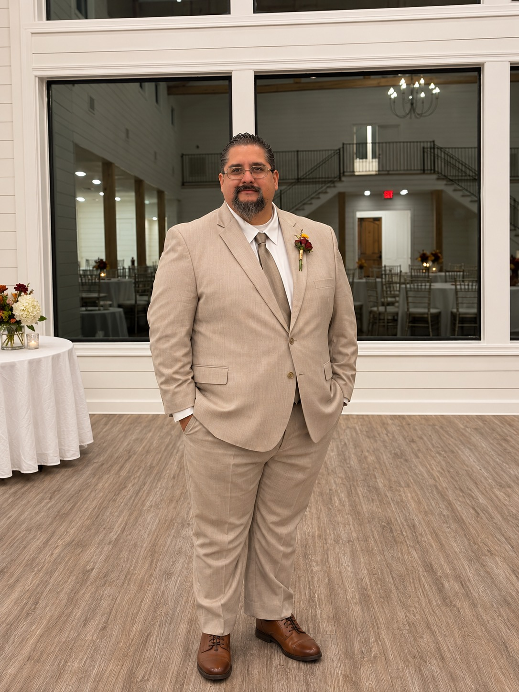

About Refuge of Hope
Refuge of Hope Baptist Church is committed to sharing the Gospel, building strong families, and serving our community through the love of Jesus Christ.

Meet Our Pastor
Welcome to Refuge of Hope Baptist Church.
Our prayer is that every person who walks
through our doors experiences the love,
truth, and hope found in Jesus Christ.
Whether you are searching for a church home,
need prayer,
or simply want to learn more about God,
you are always welcome here.
— Pastor Edelmiro Acevedo
Our Mission
To glorify God by preaching the Gospel, making disciples, strengthening families, and serving our community with the love and truth of Jesus Christ.
Why Refuge of Hope?
Life can be full of struggles,
pain,
uncertainty,
and brokenness.
We know Jesus Christ is a refuge
for the hurting,
the weary,
and the searching.
Our desire is for every person
who enters our church
to find hope,
peace,
truth,
and restoration through Him.
Refuge of Hope is more than a name —
it is our prayer and mission.
What We Believe
- We believe the Bible is the inspired Word of God.
- We believe salvation comes only through Jesus Christ.
- We believe Jesus Christ died, was buried, and rose again.
- We believe the church exists to glorify God and share the Gospel.
- We believe every person can find hope and forgiveness in Christ.
What to Expect
- Friendly people and a welcoming atmosphere
- Bible-centered preaching and teaching
- Worship focused on Jesus Christ
- A place for families, children, and visitors
- Prayer, encouragement, and fellowship